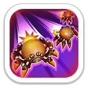
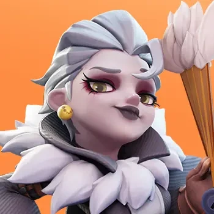
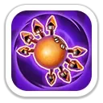
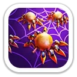
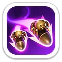
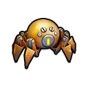
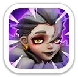
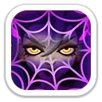

Кислотный рефлекс
Тройной урон · снижение атакиЗапускает трёх механических пауков. Каждый наносит урон по области и на 2 секунды снижает атаку врага.
70 / 77 / 84 / 91 / 98% атаки · атака врага −5 / 10 / 15 / 20 / 25%

Дебафф защиты · циклический урон стрелков · атакующие сборы
Лигея добавляет 12 поколению мощный стрелковый дебафф. Снижение защиты противника делает её особенно ценной в сборах, но для F2P она обычно идёт после более доступной Кароль и фронтовой Хервор.
Максимальные значения героя по актуальным карточкам.
Навыки для Арены и Исследования.

Запускает трёх механических пауков. Каждый наносит урон по области и на 2 секунды снижает атаку врага.
70 / 77 / 84 / 91 / 98% атаки · атака врага −5 / 10 / 15 / 20 / 25%
Наносит урон и может наложить ловушку Резонанса на 5 секунд, перенаправляя получаемый Лигеей урон в отмеченную цель.
50 / 55 / 60 / 65 / 70% атаки · шанс ловушки 20 / 40 / 60 / 80 / 100%

Расходует защитного паука, чтобы отразить негативный эффект, и на 10 секунд повышает атаку Лигеи.
Атака +8 / 12 / 16 / 20 / 24%
Ключевые боевые эффекты для марша, сборов и крупных PvP-сражений.

Постоянно снижает защиту всех вражеских войск.
−5 / 10 / 15 / 20 / 25%

Каждые 2 атаки стрелки наносят дополнительный урон и на 1 ход повышают получаемый целью урон.
Доп. урон +20 / 40 / 60 / 80 / 100% · получаемый урон +5 / 10 / 15 / 20 / 25%
Каждые 2 атаки повышает урон стрелков по цели и на 1 ход снижает наносимый ею урон.
Урон +20 / 40 / 60 / 80 / 100% · урон цели −4 / 8 / 12 / 16 / 20%

Максимальные бонусы: +4 384 атаки · +3 613 защиты · +27 101 здоровья · +362,5% смертоносности · +362,5% здоровья войск.


Сильна за счёт ловушки Резонанса, снятия негативных эффектов и высокого урона.
Очень опасный стрелок благодаря постоянному снижению защиты противника.
Отличный дебаффер для атакующих сборов и сильный вариант лидера стрелкового марша.
Сильный участник чужого сбора: первый навык Экспедиции снижает защиту цели до 25%.
Лигея добавляет 12 поколению мощный стрелковый дебафф. Снижение защиты противника делает её особенно ценной в сборах, но для F2P она обычно идёт после более доступной Кароль и фронтовой Хервор.